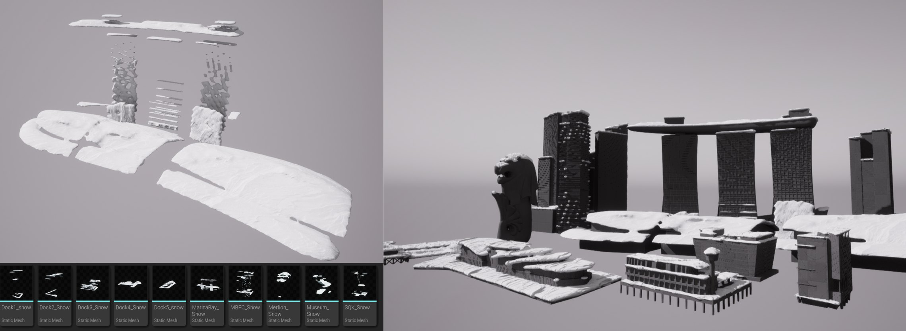
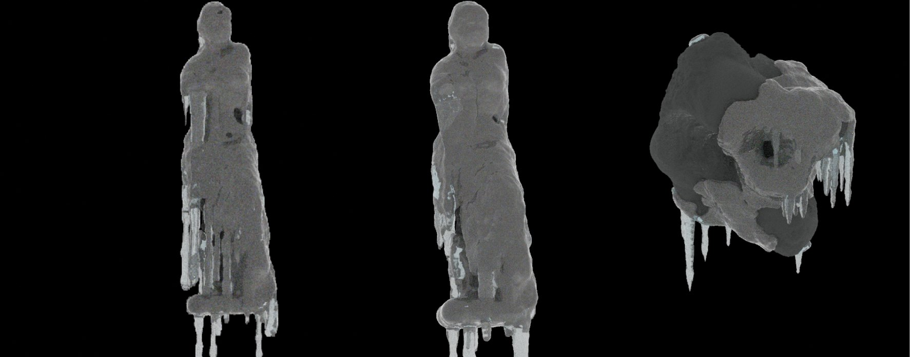
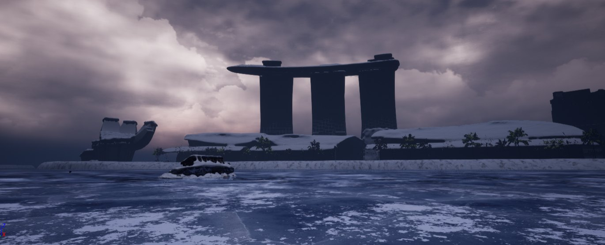
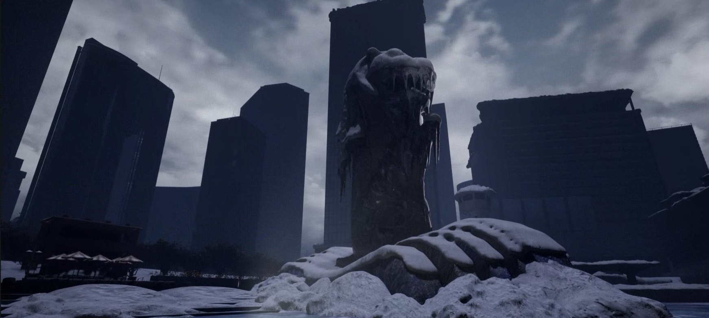
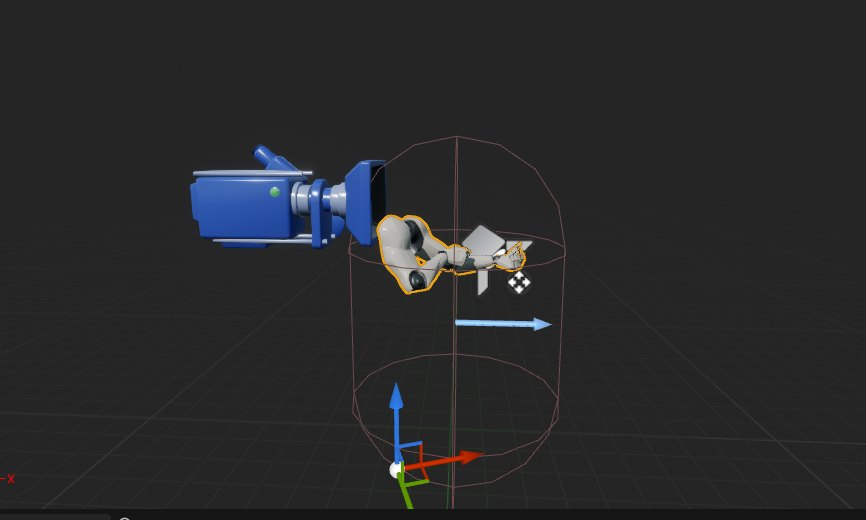
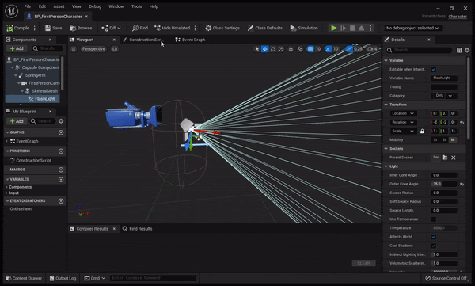
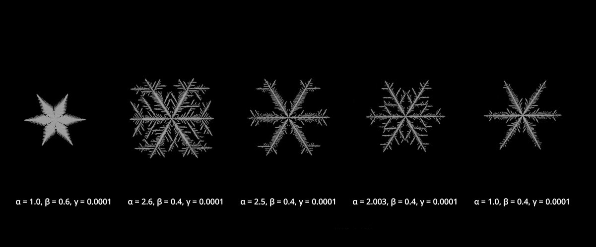

Project Description (Group Project)
In 2035, global climate change gets more and more acute. Extreme weather conditions happen first on a regional scale in many different parts of the world but human society does not take it seriously. Eventually, a global-scale snowstorm comes and the Earth enters a new ice age. The snowstorm freezes up the world within a month. Famine happens, riots follow, and in consequence, human society is destroyed.
This project captures the scenery in Singapore a few months after the society collapses.
My focus
Building a realistic snow generator in Blueprint and an icicle generator in Houdini, plus lighting and the final video edit with license-free SFX.
Goal
To create realistic cities covered by snow with snow & ice shaders.
Team
Shader Technical Artist, Lighting Artist - Christine Jung
Technical Artist, Look-Dev Artist - Robin Zheng
Technical Environment Artist - Caiyu Zhang
Environment Artist, Technical Artist - Yuxuan Wu
Technical Artist, Look-Dev Artist - Laura Yang
Piled Snow Generator — UE5 Blueprint
Problem
1. Too heavy to apply the generator to large-scale models or high poly models
2. Had to cache the mesh and regenerate the snow every time the transform or scale changed

Solution
1. Generate snow on very small-sized objects (0.02) for efficiency
2. Bake the output as a static mesh
Icicle Generator
Created an ice & icicle generator using Houdini. We used only the final frame as the output, but the icicles grow (simulate) to conform to the original mesh.
You can adjust the parameters of :
- Birth rate (# of seeds for spawning)
- Growth speed (length)
- Thickness, shape
- Ice coverage


Lighting
Lit to achieve a disastrous atmosphere with a bit of hope.


Flashlight
Created a flashlight effect using Blueprint, so that the light follows the rotation of the camera, and shakes in sync with the breathing & walking animation of the player character.


Ice Shader — Problem Solving
Solution
Instead of transparent shader, I chose to make the shader opaque. Yet, I was able to achieve volumetric ice look by offsetting UV coordinate with camera vector.
Snowflake Generator — Houdini (not used in the final project)
Snowflake Generator
Requirement
1. To create a realistic snowflake to use for the intro scene
2. Expose parameters to tweak to find the right snowflake shape
- Referred to this paper(A local cellular model for snow crystal growth - Clifford A. Reiter *) to get the knowledge of how the snowflakes grow and how to simulate it.
- Available features:
1. Alpha (weighting factor): center seed cell diffusion weight
2. Beta (background level): distance from the initial cell
3. Gamma (constant): adds constant to the growth of the ice (cells surrounding seed cell)
*Because the team decided to switch the deliverable from cinematic to playable demo, we did not use this snowflake for the intro scene.
